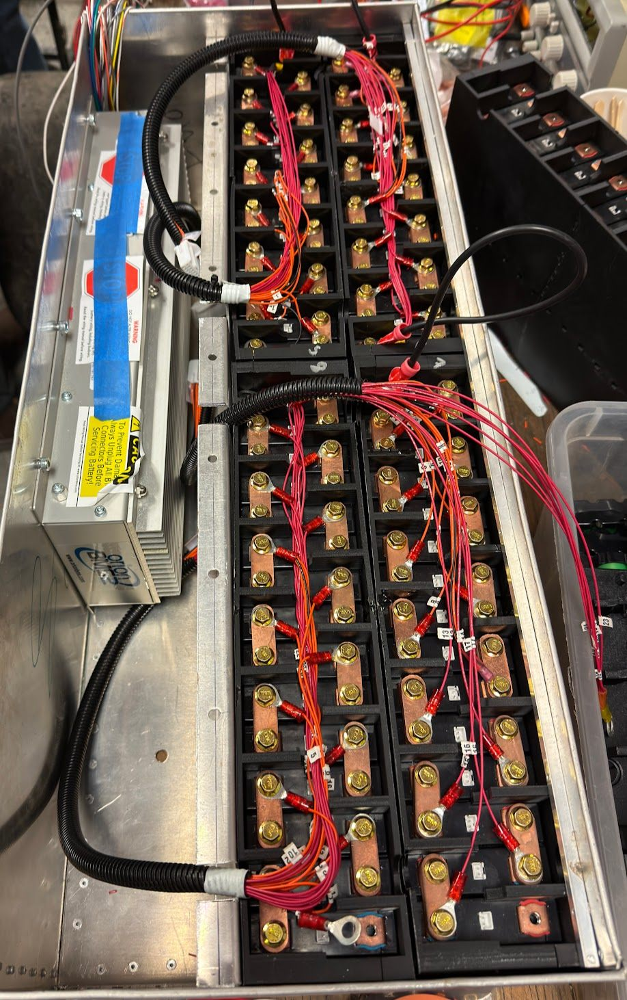
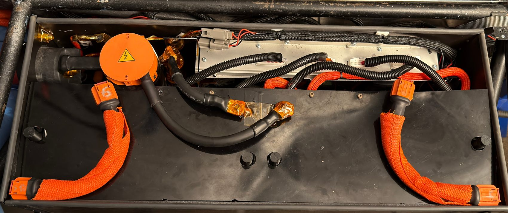
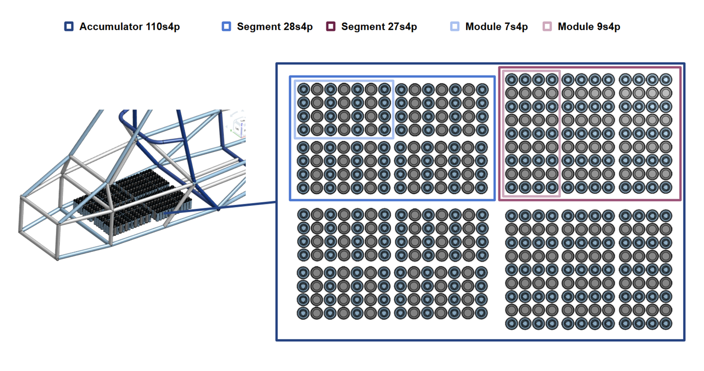
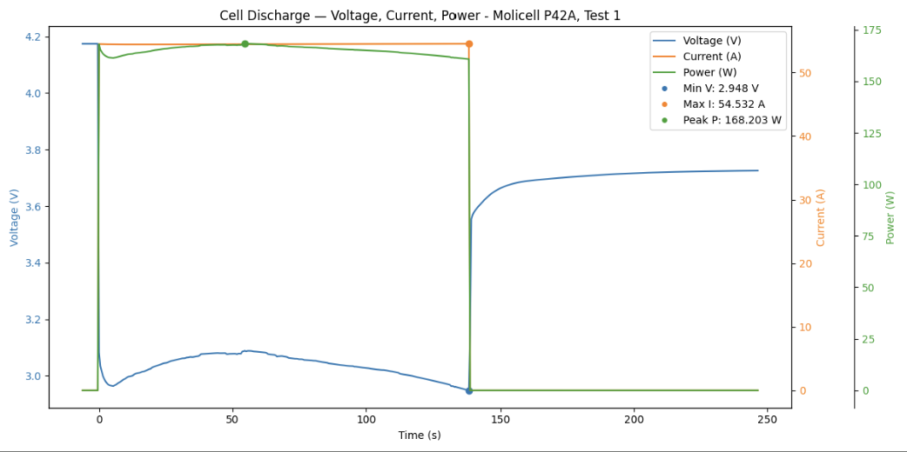

Project mission: engineer a competition-grade EV accumulator that prioritizes safety, performance, and serviceability while meeting strict FSAE regulatory requirements.
Overview
Designing a high-voltage accumulator for the Formula-Hybrid Electric competition is a problem at the intersection of electrical-engineering precision and motorsport durability. As Accumulator Project Manager, I lead the development of a system that delivers consistent power to our electric race car while maintaining the highest safety standards across competition and testing.
The packs integrate hundreds of lithium-ion cells into modular segments that can be serviced and monitored. Each segment carries custom PCBs for thermistor and voltage sensing, alongside a dedicated battery management system (BMS) that interfaces with the vehicle's safety and shutdown circuits.
On last year's accumulator (right), I led the design of the low-voltage safety circuitry, the fusebox layout, and the high-current path — ensuring reliable isolation, fault detection, and compliance with FSAE electrical regulations.
The first image shows the first successful assembly of a module after months of design, build, and test. That milestone validated our electrical architecture and safety systems and opened the door to performance tuning and competition readiness.
The second image is the prototype deployment of a single accumulator module in the car's sidepod — verifying mechanical packaging and high-voltage connectivity, and letting us energize the system for charge / discharge testing under load.


New accumulator design In Progress
Building on what we learned, the current accumulator is being redesigned from the ground up. It targets roughly 50% of the previous form factor and focuses on modularity, improved thermal management, and higher reliability.

Built around Molicel P42A cells, the new design is matched to the demands of our chosen motor / inverter during events like acceleration and autocross. The entire accumulator can be removed from the car as a single unit for service.
My focus areas on this iteration: the high-voltage interconnect architecture, low-voltage BMS integration, and the thermal-management strategy needed to keep performance consistent across an event.
Cell testing & validation

Rigorous cell testing is essential to confirm the Molicel P42A can meet the performance and safety margins we need in Formula-Hybrid competition. Our protocol evaluates discharge performance across temperature ranges, load conditions, and cycle counts — examining voltage sag and capacity retention.
The data feeds directly into the accumulator architecture, the cooling-system design, and the BMS configuration, ensuring reliable performance throughout the event while staying compliant with FSAE safety regulations.